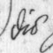
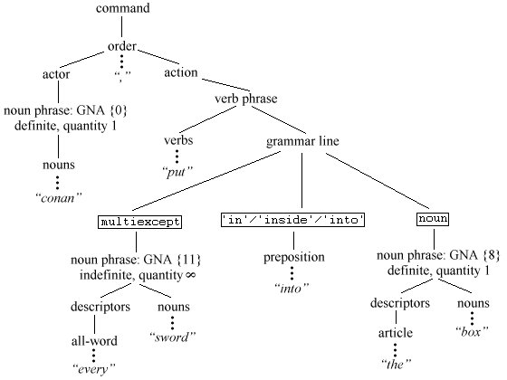

 ¡Bienvenido a Aventura! Despite the English-language bias of early computers and their manuals, interactive fiction has a culture and a history beyond English, not least in Germany. Like the Monty Python team and the Beatles, Infocom made a German translation of their defining work, when in early 1988 Jeff O'Neill coded up ‘Zork I: Das Große Unterweltreich’. It came at a sorry time in Infocom's fortunes and remains officially unreleased, in part because the translator recruited had rendered the text in a stilted, business-German manner, though a beta-test of the story file circulates to this day. But O'Neill's work was not in vain, as it left another important legacy: an upgrading of the Z-machine format to allow for accented characters, which opened the door to non-English IF on the Z-machine. Jose Luiz Diaz's translation of ‘Advent’ into Spanish, as ‘Aventura’, stimulated much of the 1996 development of Inform as a multilingual system, and Toni Arnold's game ‘Rummelplatzgeschichte’ (1998) also deserves mention, as does advice from Inform users across four continents, among them Torbjörn Andersson, Joachim Baumann, Paul David Doherty, Bjorn Gustavsson, Aapo Haapanen, Ralf Herrmann, J. P. Ikaheimonen, Ilario Nardinocchi, Bob Newell, Giovanni Riccardi and Linards Ticmanis. If nothing else, I am glad to have learned the palindromic Finnish word for soap dealer, “saippuakauppias”.
The standard English-language release of the Inform library now consists of eight files of code. Of these eight, only two need to be replaced to make a translation to another language: "Grammar.h", which contains grammars for English verbs like “take” and “drop”; and a “language definition file” called "English.h". For instance, in Ilario Nardinocchi's translation these two files are replaced by "ItalianG.h" and "Italian.h", in Jose Luis Diaz's translation they become "SpanishG.h" and "Spanish.h" and so on. Language definition files can be useful for more, or rather less, than just translation. ‘The Tempest’ (1997), for instance, uses a language definition file to enable it to speak in Early Modern English verse and to recognise pronouns like “thee” and “thy”. A suitable language definition file could also change the persona of an Inform game from second-person (“You fall into a pit!”) to first-person (“I have fallen into a pit!”) or third (“Bilbo falls into a pit!”), or from present to past tenses, as Jamie Murphy's game ‘Leopold the Minstrel’ (1996) did.
This section goes into the linguistics of the Inform parser, and how to add new grammatical concepts to it using grammar tokens. The next goes into full-scale translation and how to write new language definition files.
· · · · ·
Language is complex, computers are simple. Modern English is a mostly non-inflected language, meaning that words tend not to alter their spelling according to their usage, but even here the parser has to go to some trouble to cope with one of its remaining inflections (“take coin” but “take six coins”: see §29). The range of variation in human languages is large and as many are heavily inflected the task at first seems hopeless.†
On the other hand, Inform is mainly used with Romance-family languages, where commands are formed roughly as they are in English. The language understood by the parser is a simple one, called Informese. It has three genders, two numbers, a concept of animate versus inanimate nouns and a clear understanding of articles and pronouns, but all verbs are imperative, the only tense is the present, there are no cases of nouns (but see §35) and adjectives are not distinguished from nouns (but see §26). Informese is based on a small part of English, but the proposition of this chapter is that (with some effort) you can find Informese at the core of many other languages as well.
Changes of vocabulary are obviously needed: for instance, where an English game recognises “other”, a French one must recognise “autre”. But, as the following example shows, vocabulary changes are not enough:
jetez la boule dedans throw the ball into it (French)
has no word-for-word translation into Informese, because “dedans” (into it) is a pronominal adverb, and Informese doesn't have pronominal adverbs. Instead, a transformational rule like this one must be applied:
dedans inside it → dans lui
Transformational rules like this one bring new grammatical structures into the Inform parser. The rest of this section is occupied with describing what is present already.
· · · · ·
The following is a short grammar of Informese. Both here and in the General Index, grammatical concepts understood by the parser are written in angle brackets ‹like so›.
(1) Commands
A command to an Inform game should be one of:
‹oops-word›
‹word›
‹action phrase›
‹noun phrase›,
‹action phrase›
An ‹oops-word› corrects the last command by putting the ‹word› in to replace whatever seemed to be incorrect. In "English.h", the only words in the ‹oops-word› category are “oops” and its abbreviation “o”. An ‹action phrase› instructs the player to perform an action, unless it is preceded by a ‹noun phrase› and a comma, in which case someone else is instructed to perform an action.
An ‹action phrase› consists of a sequence of verb phrases, divided up by full stops or then-words: a ‹then-word› is a word like the English “then” or a full stop. For instance “take sword. east. put sword in stone” is broken into a sequence of three verb phrases, each parsed and acted on in turn. (It's important not to parse them all at once: the meaning of the noun phrase “stone” depends on where the player is by then.)
(2) Verb phrases
A ‹verb phrase› is one of:
‹again-word›
‹imperative verb›
‹grammar line›
Again-words are another category: in "English.h"; these are “again” and its abbreviation “g”. An ‹again-word› is understood as “the ‹verb phrase› most recently typed in which wasn't an ‹again-word›”.
The imperative is the form of the verb used for orders or instructions. In English the imperative (“open the window”) looks the same as the infinitive (“to open”), but in most languages they differ (French “ouvrez” is imperative, “ouvrir” infinitive). Even in many languages where verbs usually follow objects, such as Latin, the imperative comes at the start of a verb phrase, and Informese insists on this. Informese also wants the ‹imperative verb› to be a single word, but programming can get around both requirements.
Grammar lines are sequences of tokens. Each token results in one of four grammatically different outcomes:
‹noun phrase›
‹preposition›
‹number›
‹unparsed text›
For instance, a successful match for the tokens
noun or
multiheld would produce
a ‹noun phrase›, whereas a match
for 'into' would produce
a ‹preposition›. Note that a
general parsing routine can produce any of these four outcomes.
(3) Prepositions
Any word written in quotes as a grammar token. This is normally also a preposition in the ordinary grammatical sense, but not always, as the “press charges” example in §30 shows. In "English.h", “look under table” and “switch on radio” contain two words considered to be prepositions in Informese: “under” and “on”.
(4) Numbers
Include at least the numbers 1 to 20 written out in words. “At least” because a language definition file is free to include more, but should not include less.
(5) Noun phrases
A string of words which refer to a single object or collection of objects, with more or less exactness. Here are some typical examples of "English.h" noun phrases:
it
rucksack
brown bag, pepper
a box and the other compass
nine silver coins
everything except the rucksack
smooth stones
A noun phrase is a list of basic noun phrases:
‹basic np› ‹connective› ‹basic np› ‹connective› … ‹connective› ‹basic np›
and there are two kinds of connective: an ‹and-word› (conjunction), and a ‹but-word› (disjunction). The Inform parser always regards a comma in a ‹noun phrase› (other than one used at the start of a command: see (1) above) as an ‹and-word›, and the definition of "English.h" gives “and” as another. "English.h" has two ‹but-words›: “but” and “except”.
‹Noun phrases›
being parsed are assigned several properties. They are declared
definite if they carry no article, or a definite article which
is not qualified by an all-word or a demanding number, and are otherwise
indefinite. (Except that a noun-phrase containing a dictionary
word flagged as likely to be referring to plural objects, such as
'crowns//p', is always indefinite.) Definiteness affects
disambiguation and the parser's willingness to make guesses, as the
description of the parser's disambiguation algorithm at the end
of §33 shows.
Indefinite noun phrases also have a target quantity of objects being referred to: this is normally 1, but 7 for “seven stones” and 100, used internally to mean “as many as possible”, for “crowns” or “all the swords”. Noun phrases also have a gender-number-animation combination, or “GNA”:
Gender: in most European languages, nouns divide up into masculine, feminine or neuter, the three genders in Informese. Gender is important when parsing noun phrases because it can distinguish otherwise identical nouns, as in French: “le faux”, the forgery, “la faux”, the scythe. As in German, there may be no satisfactory way to determine the gender of a noun by any automatic rules: see the next section for how Inform assigns genders to nouns.
Number: singular (“the hat”) or plural (“the grapes”). Individual objects in Inform games can have names of either number. Languages with more than two numbers are rare, but Hebrew has a “pair of” number. This would have to be translated into a demanding number (see (7d) below) for Informese.
Animation: Informese distinguishes between the animate (people and higher animals) and the inanimate (objects, plants and lower animals).
With three genders, two numbers and two animations, Informese has twelve possible GNA combinations, and these are internally represented by the numbers 0 to 11:
| 0 | animate | singular | masculine |
| 1 | feminine | ||
| 2 | neuter | ||
| 3 | plural | masculine | |
| 4 | feminine | ||
| 5 | neuter | ||
| 6 | inanimate | singular | masculine |
| 7 | feminine | ||
| 8 | neuter | ||
| 9 | plural | masculine | |
| 10 | feminine | ||
| 11 | neuter |
Not all possible GNAs occur in all natural languages. In English, cases 6, 7, 9 and 10 never occur, except perhaps that ships are sometimes called “she” and “her” without being animate (GNA 7). In French, 2, 5, 8 and 11 never occur. The parser actually works by assigning sets of possible GNA values to each noun phrase: so, in French, “le faux” carries the set {6}, while the more ambiguous noun phrase “les” carries {3,4,9,10}.
(6) Basic noun phrases
These take the following form, in which both lists can have any number of words in, including none, and in any order:
‹list of descriptors› ‹list of nouns›
For instance “the balloon” has one descriptor and one noun; “red balloon” has just two nouns; “all” has just one descriptor.
(7) Descriptors
There are five kinds of ‹descriptor›, as follows:
(8) Nouns
There are three kinds of ‹noun›, as follows:
parse_name
routine attached, which complicates matters, these will be the words
in its name array. For instance:
Object -> "blue box" with name 'blue' 'box';has two possible names in Informese, “blue” and “box”.
· · · · ·
It is worth mentioning a number of grammatical features which are not contained in Informese, along with some ways to simulate them.
adverbs such as “quickly” in “run quickly east”. These are not difficult to implement:
Verb 'run'
* noun=ADirection -> Go
* 'quickly' noun=ADirection -> GoQuickly
* noun=ADirection 'quickly' -> GoQuickly;
However, “The authors of Zork have thought about several possible extensions to the Zork parser. One that has come up many times is to add adverbs. A player should be able to do the following:
>go north quietly
You sneak past a sleeping lion who sniffs but doesn't wake up.
The problem is to think of reasons why you would not do everything ‘quietly’, ‘carefully’ or whatever.” (P. David Lebling, “Zork and the Future of Computerized Fantasy Simulations”, Byte, December 1980.) A further problem is the impracticality of modelling the game world closely enough to differentiate between ways to achieve the same action. In Melbourne House's ‘The Hobbit’ adverbs influence the probability of success in randomised events, so for instance “throw rope vigorously across river” is more likely to succeed than “throw rope across river”, but those few players who discovered this were not pleased. Twenty years on from ‘Zork’, adverbs remain largely unused in the medium.
adjectives are not distinguished from nouns, although it can be useful to do so when resolving ambiguities. See §28 for remedies.
genitives: objects are not normally named by description of their circumstances, so “the box on the floor” and “the priest's hat” would not normally be understood. Designers can still define objects like
Object -> "priest's hat"
with name 'hat' 'priest^s';
in which the genitive “priest's” is a noun like any other.
pronouns of other kinds, notably: nominative pronouns (“I” in “I am happy”); interrogative pronouns (“What” in “What are you doing?”), although these are often simulated by making “what” an Informese verb; demonstrative pronouns (“that” in “eat that”), although in "English.h"; the parser gets this right because they look the same as demonstrative adjectives with no noun attached; possessive pronouns (“mine” in “take the troll's sword. give him mine”, which should expand “mine” to “my X”, where X is the current value of “it”).
pronominal adverbs are not found in English, but are common in other languages: for instance “dessous” (French: “under it”). The next section suggests how these can be achieved.
· · · · ·
An example of parsing Informese. [description] This diagram shows the result of parsing the text “conan, put every sword into the box”, assuming that the verb “put” has a grammar line reading
* multiexcept 'in'/'inside'/'into' noun -> Insert
as indeed it does have in the "English.h" grammar.
† In fact the difficult languages to parse are not those with subtleties of spelling but those where even word-recognition can be a matter of context and guesswork, such as Hebrew, where all vowels are conventionally omitted.